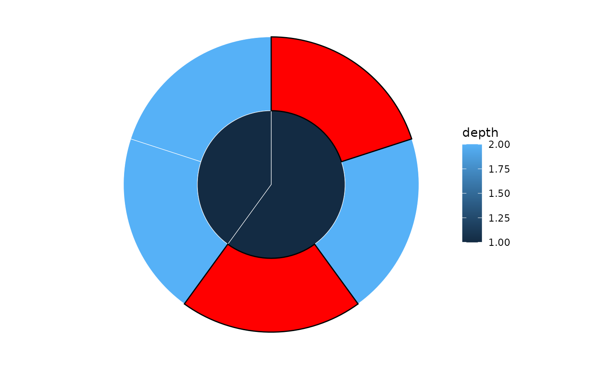

Highlight specific nodes in a sunburst or icicle plot
Source:R/highlight-nodes.R
highlight_nodes.RdAdds a geom_rect() layer on top of an existing plot to visually
emphasise specific nodes. Works with both sunburst() and icicle()
plots.
Arguments
- p
A ggplot object produced by
sunburst()oricicle().- nodes
Character vector of node names or integer vector of node IDs to highlight.
- fill
Fill colour for highlighted nodes. Default
"gold".- colour
Border colour for highlighted nodes. Default
"black".- linewidth
Border line width for highlighted nodes. Default
0.5.
Examples
sb <- sunburst_data("((a, b, c), (d, e));")
p <- sunburst(sb, fill = "depth")
highlight_nodes(p, nodes = c("a", "c"), fill = "red")
